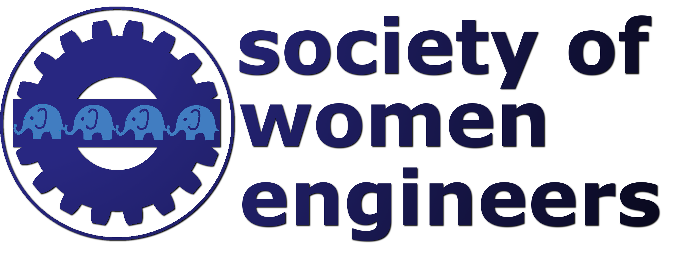

<! DOCTYPE html>
<html lang="en">
	<head>
		<!-- Bootstrap CSS -->
		<link rel="stylesheet" href="http://maxcdn.bootstrapcdn.com/bootstrap/3.2.0/css/bootstrap.min.css">
		<link rel="stylesheet" href="http://maxcdn.bootstrapcdn.com/bootstrap/3.2.0/css/bootstrap-theme.min.css">
		
		<!-- Local CSS -->
		<link rel="stylesheet" href="static/style.css">
		
		<meta name="viewport" content="width=device-width, initial-scale=1">
		<meta charset="utf-8">
		<meta http-equiv="X-UA-Compatible" content="IE=edge" />
		<meta name="keywords" content="Tufts,SWE,Society of Women Engineers" />
		
		<title>Tufts SWE</title>
	</head>
	
	<body>
		<!-- application template - this is displayed on every page -->
		<script type="text/x-handlebars">
			<div class="container-fluid local-container">
				<div class="row">
					<div class="col-md-12 panel">
						
					</div>
				</div>
				<div class="row">
					<div class="col-md-12 panel">
						<nav>
							<ul class="nav nav-pills nav-justified">
								<li>{{#link-to 'main'}}Home{{/link-to}}</li>
								<li>{{#link-to 'about'}}About SWE Tufts{{/link-to}}</li>
								<li>{{#link-to 'board'}}Board Members{{/link-to}}</li>
								<li>{{#link-to 'calendar'}}Calendar{{/link-to}}</li>
								<!-- TODO add these -->
								<li class="dropdown"><a class="dropdown-toggle" data-toggle="dropdown" href="#">Meeting Minutes <span class="caret"></span></a>
									<ul class="dropdown-menu">
										<li><a href="#">September 2014</a></li>
										<li class="divider"></li>
										<li><a href="#">May 2014</a></li>
										<li><a href="#">April 2014</a></li>
										<li><a href="#">March 2014</a></li>
										<li><a href="#">February 2014</a></li>
										<li><a href="#">January 2014</a></li>
										<li><a href="#">December 2013</a></li>
										<li><a href="#">November 2013</a></li>
										<li><a href="#">October 2013</a></li>
										<li><a href="#">September 2013</a></li>
									</ul>
								</li>
								<li>{{#link-to 'corporate-relations'}}Corporate Relations{{/link-to}}</li>
								<li>{{#link-to 'contact'}}Contact SWE Tufts{{/link-to}}</li>
						</nav>
					</div>
				</div>
				<div class="row">
					<div class="col-md-12 panel">
						<section>
							{{outlet}}
						</section>
					</div>
				</div>
			</div>
		</script>
		<!-- home template -->
		<script type="text/x-handlebars" data-template-name="main">
			<h1>Welcome to SWE Tufts!</h1>
			
			<p>SWE is open to all engineering students at Tufts. New members are welcomed throughout the year, so it's never too late to
			join! Students are not required to be members of the national Society of Women Engineers to attend events or board meetings, but
			elected board members must have an active membership with SWE. Board meetings are held weekly.</p>
			
			<p>SWE welcomes and supports engineers of all majors. The current executive board is comprised of students majoring in mechanical
			engineering, biomedical engineering, chemical engineering, civil engineering, environmental engineering, engineering psychology,
			computer science, and electrical engineering. Members participate in a wide variety of campus activities and have diverse outside 
			interests. SWE Tufts members have attended regional and national conferences and participated in events with a variety of corporations.</p>
		</script>
		<!-- about template -->
		<script type="text/x-handlebars" data-template-name="about">
			<h1>About the Society of Women Engineers</h1>
			
			<h2>The SWE Mission</h2>
			<p>The mission of SWE is threefold: to stimulate women to achieve full potential in careers as engineers and leaders, 
			to expand the image of the engineering profession as a positive force in improving the quality of life, and to demonstrate 
			the value of diversity. SWE aims to be a key to the success of women in engineering and technology.</p>
			
			<p>Members of the organization aspire to the highest level of ethical behavior with honesty and dignity in both their 
			personal and professional relationships and responsibilities. They embrace diversity in its broadest interpretation and 
			commit to creating an inclusive environment for all members. They provide an organization that fosters mentoring, and the 
			development of professional and personal networks. Members also share a common definition of success with open, transparent 
			access to common information, building mutual respect and confidence in the competence of those with whom we lead, serve and 
			partner. For college students in particular, SWE provides the opportunity to inspire future generations and have fun. It also 
			provides students valuable access to a unique set of resources that sets the stage for a successful career.</p>
			
			<h2>Faculty Advisor: Karen Panetta</h2>
			<div class="row">
				<div class="col-md-3">
					<!-- Karen Panetta's image -->
				</div>
				<div class="col-md-9">
					<p>Dr. Karen Panetta is a Fellow of the IEEE. Dr. Panetta received the B.S. in Computer Engineering from Boston University, 
					and the M.S. and Ph.D. in Electrical Engineering from Northeastern University. She is the Editor-in-Chief of the IEEE Women 
					in Engineering Magazine. She serves as the 2011 Chair of the IEEE Boston Section. During 2009-2007, she served as the World 
					Wide Director for IEEE Women in Engineering, which has over 400 chapters in 53 countries.</p>
					
					<p>She is a Professor of Electrical and Computer Engineering at Tufts University and Director of the Simulation Research 
					Laboratory. Her research focuses on developing efficient algorithms for simulation, modeling, signal and image processing for 
					security and biomedical applications. Her projects with her students have helped track and diagnose millions of children in 
					India afflicted with Autism and blindness. Their work has had a profound effect on government policies and has helped bring 
					awareness and provide proper aid to these children. Dr. Panetta is the founder of the award winning Nerd Girls program, which 
					celebrates the individuality and “beauty of brains” all in an effort to inspire young girls to pursue math, science and 
					engineering while breaking stereotypes of smart individuals.</p>
					
					<p>Before joining the faculty at Tufts, Dr. Panetta was employed as a computer engineer at Digital Equipment Corporation. 
					Her research in Simulation and Modeling has won her research team five awards from NASA for “Outstanding Contributions to 
					NASA Research” and “Excellence in Research”.  She is a NASA Langley Research Scientist “JOVE” Fellow, is a recipient of the 
					NSF Career Award and won the 2003 Fischer Best Engineering Teacher Award. Dr. Panetta was also awarded a Mass High Tech 
					All-Star by Mass High Tech Magazine. She is a recipient of the “Be The Change” award from the Massachusetts Conference for 
					Women. She is the 2009 Norm Augustine Award recipient from the American Association of Engineering Societies and the 2011 
					recipient of the Anita Borg Institute, Women of Vision Award and the 2011 IEEE Harriet Rigas Award for Education. In 2010, 
					the IEEE recognized Karen with the IEEE Educational Activities Board, Major Educational Innovation Award. She is a senior 
					member of SWE, ACM, Tau Beta Pi and Eta Kappa Nu. In 2011, United States President Barack Obama awarded Karen the nation’s 
					highest award for engineering education and mentoring, the NSF PAESMEM award.</p>
				</div>
			</div>
			
			<h2>Faculty Advisor: Ayse Asatekin</h2>
			<div class="row">
				<div class="col-md-9">
					<p>Ayse Asatekin is an assistant professor in the Chemical and Biological Engineering Department. She received her bachelor's 
					degrees in chemical engineering (2002) and chemistry (2003) from the Middle East Technical University in Ankara, Turkey. 
					She went on to receive her Ph.D. in chemical engineering with a concentration in polymer science and technology in 2009 from 
					MIT, where she was awarded the Materials Research Society's Graduate Student Gold Award. Before joining Tufts in 2012, she 
					was the principle scientist at Clean Membranes, Inc., a start-up company she co-founded to commercialize her fouling-resistant 
					membrane technology that she began developing during her doctoral research. Her research focuses on designing novel membrane 
					materials for water treatment, small molecule separations, removal of multiple types of pollutants, and energy-efficient smart 
					filtration processes.</p>
				</div>
				<div class="col-md-3">
					<!-- Ayse Asatein's image -->
				</div>
			</div>
		</script>
		<!-- board members template -->
		<script type="text/x-handlebars" data-template-name="board">
			<h1>2014-2015 Board Members</h1>
			{{#each}}
				<div class="row">
					<div class="col-md-1">
						<!-- image --><br />
						{{position}}
					</div>
					<div class="col-md-11">
						<p><b>{{name}}</b><br />
						Class of {{year}} &#183; {{email}}<br />
						Major: {{major}}<br />
						{{#if secondMajor}}
						Second Major: {{secondMajor}}<br />
						{{/if}}
						{{#if minor}}
						Minor: {{minor}}<br />
						{{/if}}
						Activities: {{activities}}<br />
						Interests: {{interests}}<br />
						</p>
					</div>
				</div>
			{{/each}}
		</script>
		<!-- calendar template -->
		<script type="text/x-handlebars" data-template-name="calendar">
			<h1>Event Calendar</h1>
			<iframe src="https://www.google.com/calendar/embed?src=swetufts%40gmail.com&ctz=America/New_York"></iframe>
		</script>
		<!-- corporate relations template TODO add companies we've worked at -->
		<script type="text/x-handlebars" data-template-name="corporate-relations">
			<h1>Corporate Relations</h1>
			<iframe src="https://docs.google.com/forms/d/19f2qC_iIpZcV8c3v-CffyxKPfpdhj2_xu1QGDRe_us0/viewform?embedded=true#start=embed">Loading...</iframe>
		</script>
		<!-- contact template -->
		<script type="text/x-handlebars" data-template-name="contact">
			<h1>Contact SWE Tufts</h1>
				
			<h2>Section Contact Information</h2>
			<p>Email: swetufts@gmail.com<br />
			   Phone: 339-545-1SWE (339-545-1793)<br />
			   Facebook: <a href="http://www.facebook.com/SWETufts" target="_blank">http://www.facebook.com/SWETufts</a></p>
			   
			<h2>Region and National Information</h2>
			<p>SWE Boston: <a href="http://sweboston.org/" target="_blank">http://sweboston.org/</a><br />
			   SWE Region F: <a href="http://regionf.swe.org/" target="_blank">http://www.swe.org/regionf/</a><br />
			   SWE National: <a href="http://societyofwomenengineers.swe.org/" target="_blank">http://societyofwomenengineers.swe.org/</a></p>
		</script>
		<!-- Dependencies -->
		<script src="https://ajax.googleapis.com/ajax/libs/jquery/1.11.1/jquery.min.js"></script>
		<script src="http://builds.handlebarsjs.com.s3.amazonaws.com/handlebars-1.0.0.js"></script>
		<script src="http://maxcdn.bootstrapcdn.com/bootstrap/3.2.0/js/bootstrap.min.js"></script>
		<script src="http://builds.emberjs.com/release/ember.js"></script>
		<script src="http://builds.emberjs.com/beta/ember-data.js"></script>
		<!-- Local JS -->
		<script src="js/application.js"></script>
		<script src="js/router.js"></script>
		<script src="js/models.js"></script>
		<script src="js/fixtures/board.js"></script>
	</body>
</html>